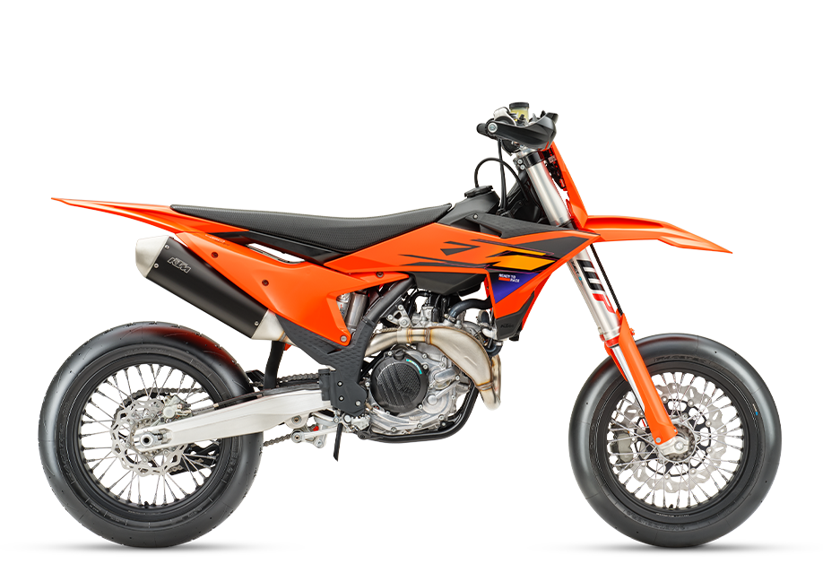
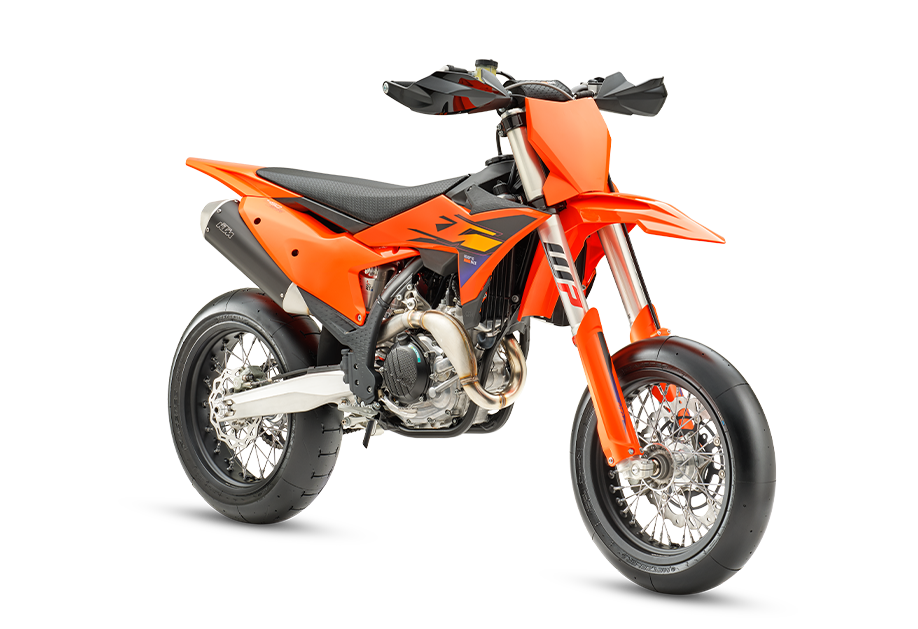
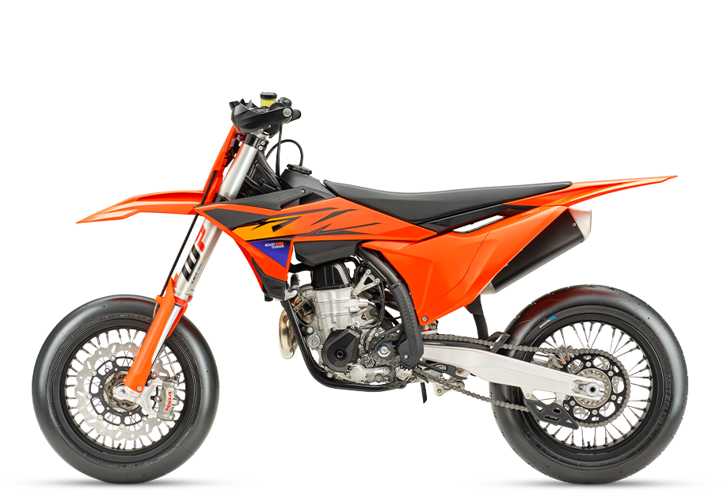

KTM 450 SMR
- Kategorija: Supermoto
- Brend: KTM
- Kvačilo: Wet, DDS, Multi-disc, Brembo Hydraulics
- Menjač: 5-stepeni
- Težina: 102 kg
- Visina od tla: 290 mm
- Visina sedišta: 890 mm
- Zadnji disk: 220 mm
- Rezervoar: 7 l
O modelu: KTM 450 SMR
KTM 450 SMR predstavlja vrhunac supermoto inženjeringa, dizajniran za vozače koji dominiraju na asfaltnim stazama. Sa agregatom od 450 kubika koji pruža eksplozivnu snagu i preciznost, ovaj motocikl je stvoren za najbrže ulaske u zavoje i agresivno kočenje.
Njegova lagana konstrukcija i trkački podešeno oslanjanje omogućavaju vrhunsku upravljivost, čineći ga prvim izborom za one koji traže čistu trkačku mašinu u svakodnevnoj upotrebi ili na karting stazama. KTM 450 SMR nije samo motor, to je oružje za osvajanje asfalta.